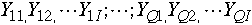
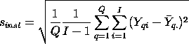

2.
Measurement Process Characterization
2.5.
Uncertainty analysis
2.5.3.
Type A evaluations
2.5.3.1.
Type A evaluations of random components
2.5.3.1.2.
|
Measurement configuration within the laboratory
|
|
|
Purpose of this page
|
The purpose of this page is to outline options for estimating
uncertainties related to the specific measurement configuration
under which the test item is measured, given other possible
measurement configurations. Some of these may be controllable and
some of them may not, such as:
- instrument
- operator
- temperature
- humidity
The effect of uncontrollable environmental conditions in the laboratory
can often be estimated from check standard data taken over a period of
time, and methods for calculating components of
uncertainty are discussed on other pages. Uncertainties resulting
from controllable factors, such as operators or instruments chosen for
a specific measurement, are discussed on this page.
|
|
First, decide on context for uncertainty
|
The approach depends primarily on the context for the uncertainty
statement. For example, if instrument effect is the question, one
approach is to regard, say, the instruments in the laboratory as a
random sample of instruments of the same type and to compute an
uncertainty that applies to all results regardless of the particular
instrument on which the measurements are made. The other approach is
to compute an uncertainty that applies to results
using a specific instrument.
|
|
Next, evaluate whether or not there are differences
|
To treat instruments as a random source of uncertainty requires that we
first determine if differences due to instruments are significant. The
same can be said for operators, etc.
|
|
Plan for collecting data
|
To evaluate the measurement process for instruments, select a random
sample of I (I > 4) instruments from those available. Make
measurements on Q (Q >2) artifacts with each instrument.
|
|
Graph showing differences among
instruments
|
For a graphical analysis, differences from the average for each artifact
can be plotted versus artifact, with instruments individually identified
by a special plotting symbol. The plot is examined to determine if some
instruments always read high or low relative to the other instruments
and if this behavior is consistent across artifacts. If there are
systematic and significant differences among instruments, a type A
uncertainty for instruments is computed. Notice that in the
graph for resistivity probes, there
are differences among the probes with probes #4 and #5, for example,
consistently reading low relative to the other probes. A standard
deviation that describes the differences among the probes is included
as a component of the uncertainty.
|
|
Standard deviation for instruments
|
Given the measurements,

for each of Q artifacts and I instruments, the pooled
standard deviation that describes the differences among instruments is:

where
![Ybar(q.) = (1/I)*SUM[i=1 to I]Y(qi)](ybarq.gif)
|
|
Example of resistivity measurements on silicon wafers
|
A two-way table of resistivity measurements (ohm.cm)
with 5 probes on 5 wafers (identified as: 138, 139, 140, 141, 142) is
shown below. Standard deviations for probes with 4 degrees of freedom
each are shown for each wafer. The pooled standard deviation over all
wafers, with 20 degrees of freedom, is the type A standard deviation for
instruments.
Wafers
Probe 138 139 140 141 142
-------------------------------------------------------
1 95.1548 99.3118 96.1018 101.1248 94.2593
281 95.1408 99.3548 96.0805 101.0747 94.2907
. 283 95.1493 99.3211 96.0417 101.1100 94.2487
2062 95.1125 99.2831 96.0492 101.0574 94.2520
2362 95.0928 99.3060 96.0357 101.0602 94.2148
Std dev 0.02643 0.02612 0.02826 0.03038 0.02711
DF 4 4 4 4 4
Pooled standard deviation = 0.02770 DF = 20
|